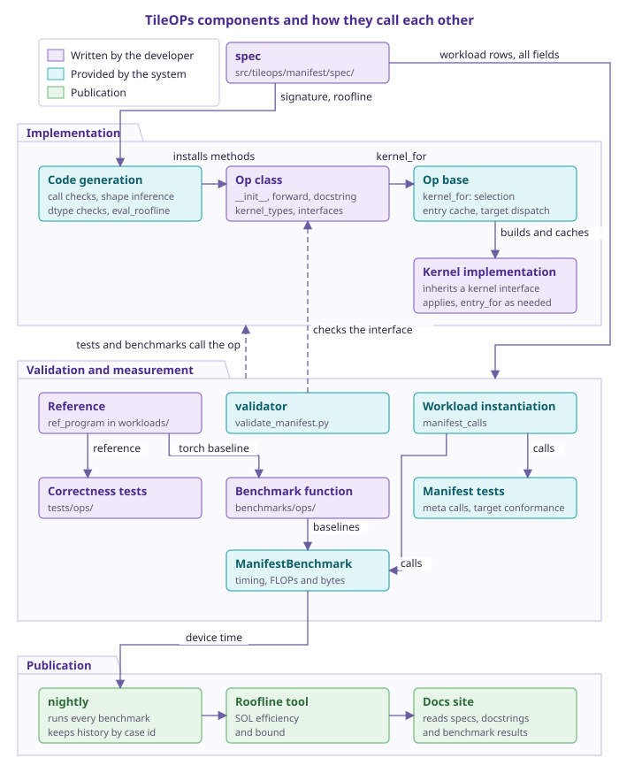
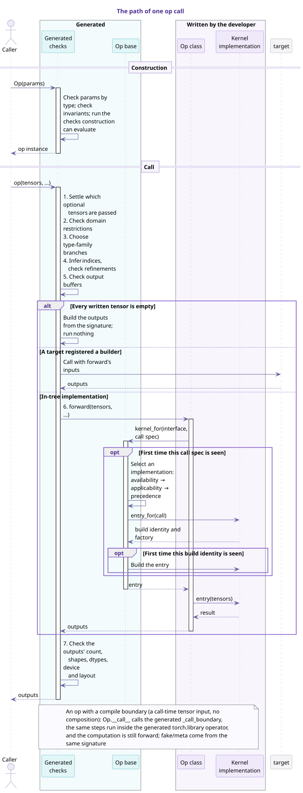
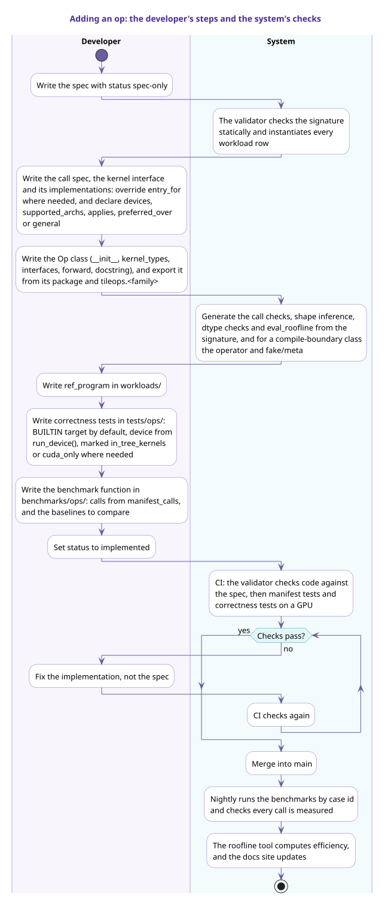

Reading and writing the manifest¶
The manifest describes the external contract of every public op in TileOPs. It consists of the YAML files under src/tileops/manifest/spec/. Each op has one entry in the manifest, and that entry is called the op's spec. The op's implementation follows the spec, and the validator checks in CI that the implementation agrees with the spec. When the two disagree, the implementation is what changes.
Once the developer has written the spec for an op, the system generates the following from it:
- the construction and call checks, output shape inference, and dtype checks;
- the calls and inputs used by the manifest tests and the benchmarks;
- the FLOPs and byte count of each call;
- the content of the docs site that is taken from the spec, such as the support matrix.
The developer writes:
- the kernel;
- the op class, including
__init__,forwardand the docstring; - the numerical reference and the correctness tests;
- the comparison baselines for the benchmark.
The first three sections of this page describe, in order, the components of the system, how one call executes, and the full workflow for adding an op.
1. System overview¶
The components of TileOPs fall into four layers:
- Declaration layer: the spec.
- Implementation layer: the code generated from the spec, and the op and kernel written by the developer.
- Verification and measurement layer: tests, benchmarks and the validator.
- Publishing layer: nightly, the roofline tools and the docs site.
In the figure below, purple components are written by the developer, cyan components are provided by the system, and light green components belong to the publishing layer.

Table 1 Parts written by the developer
| No. | Part | Location | Contents |
|---|---|---|---|
| 1 | spec | src/tileops/manifest/spec/<family>.yaml |
signature, workload rows, roofline formulas |
| 2 | kernel interface and implementations | src/tileops/kernels/; the kernel interface and the call spec usually live in the family's call_spec.py, and a family with a single kernel file writes them in that file |
The kernel interface fixes the type of the call spec and the parameters of forward; an implementation is a subclass of Kernel that also inherits the corresponding kernel interface. The default entry_for(call) constructs the implementation directly from the call spec; it is overridden only when that does not express the construction arguments correctly |
| 3 | Op class | src/tileops/ops/, exported by tileops.<family> |
an __init__ that matches params; kernel_types (key to implementation class) and interfaces (call site to kernel interface); in the in-tree implementation (usually _eager_forward, see compile boundary below), constructing the call spec and obtaining the entry to call through kernel_for; a Google-style docstring, from which the docs site generates the API reference |
| 4 | reference implementation | workloads/ |
ref_program on the workload class named after the op, or on a parameterized workload class shared by the family, plus the input construction that the workload rows cannot determine |
| 5 | correctness tests | tests/ops/ |
numerical tolerances, and the shapes needed to cover every branch of the kernel |
| 6 | benchmark function | the benchmark file in benchmarks/ops/ for the module the op belongs to; a new file is added only when no suitable one exists |
a test function parameterized with manifest_calls(Op), and the choice of comparison baselines, such as the torch reference implementation and kernels from other libraries |
The following are written only when needed:
- when an inline formula cannot express the cost, a roofline
funcintileops.perf.formulas; - when the op's FLOPs are a matrix-multiply contraction and the best implementation should use tensor cores, an override of
compute_roof(). It states the compute unit the best implementation should use, independent of the unit the current kernel actually uses; - when one kernel interface has several implementations, a declaration on each implementation of which calls it serves (
applies) and which devices it runs on (devices,supported_archs); when the applicability of implementations overlaps,preferred_overdeclares which one takes precedence, and the fallback implementation declaresgeneral = True, see Adding a kernel to an op; - an external backend does not modify the op. Before an op instance is constructed, it calls
tileops.backend.register_implementation("<Op class name>", "<key>", implementation class)to add an implementation for a kernel interface. The first argument is the op name in the manifest, andkeymust be a key the op does not use yet. The new implementation enters only instances constructed afterwards, and it is checked against the kernel interface when the instance is constructed, see How a backend joins TileOPs; - a composite op declares
delegate_typesandkernel_typeson the class, matching the spec'scomposition; - an op that supports
fullgraph=Truedeclarescompile_boundary = True:forwardonly calls_call_boundary, the in-tree implementation is written in_eager_forward, and a cold-compile test is registered intests/compile_contract.py.
Table 2 Parts provided by the system
| No. | Component | Input | Work done for the developer |
|---|---|---|---|
| 1 | code generation | signature, roofline |
construction checks, call checks wrapped around forward, _infer_output_shapes, _validate_dtypes and eval_roofline(); a class that declares a compile boundary also gets a torch.library operator and fake/meta functions |
| 2 | Op base class | kernel_types, interfaces, call spec |
at construction, checking that every implementation conforms to its kernel interface; at call time, selecting the implementation and constructing and caching the entry; holding sub-ops (delegate_for), target dispatch and autotune |
| 3 | workload instantiation | workload rows | expanding each row into calls according to dtype_cases, and generating input tensors that fit the call, including the values of shapes, dtypes, parameters and metadata |
| 4 | ManifestBenchmark |
calls and the op | timing, generating the case id, taking FLOPs and byte count from eval_roofline(), and recording results under the op name |
| 5 | manifest tests | all specs | running every call on meta tensors; checking target conformance; checking that the public API agrees with the manifest; checking that the roofline byte count agrees with what the signature derives |
| 6 | validator | all fields | static checks of the signature; for implemented ops, checking __init__, forward and composition |
| 7 | nightly | benchmarks | running every benchmark each night, checking that every call is measured, and recording history by case id |
| 8 | roofline tools | device time, GPU profile | computing SOL efficiency and identifying the bottleneck |
| 9 | docs site | spec, docstring, benchmark and roofline results | generating the API reference, the support matrix and the performance pages |
The calls used by the manifest tests and the benchmarks, including shapes, dtypes and input tensors, are all generated from the workload rows; the benchmark function only decides which implementations to compare against. The correctness tests choose their own shapes that cover every branch of the kernel. When ordinary random tensors do not satisfy the value range of an input, the workload class overrides gen_inputs().
2. The execution path of one call¶
An op call has two phases: construction and call. In the figure below, cyan participants are generated from the signature or provided by the Op base class, and purple participants are written by the developer.

- In the construction phase, the generated checks check the parameters against their
type, and run the checks that can already be evaluated at construction. - In the call phase, the generated checks first determine the inputs, select the branch and infer the indices, and only then call the implementation written by the developer. After the implementation returns, they check the number, shape, dtype, device and memory layout of the outputs, and verify that
outandaliasoutputs are the corresponding tensor objects. The implementation therefore does not repeat checks the spec already declares. - The implementation obtains the entry to call through
kernel_for(interface, call); the entry is usually a single kernel. The Op base class looks up each distinct call spec only once. When a call spec first appears, the Op base class selects exactly one of the kernel interface's implementations, whoseentry_for(call)returns the build identity and the factory. Within one kernel interface, an entry with the same implementation class and the same build identity is constructed only once. The selection rules are in Calls and validation § 2. - For an op that declares a compile boundary,
forwardonly calls the generated_call_boundary, and the in-tree implementation is written in_eager_forward. - When a target has registered a builder for the op through
register_kernel_builder, the kernel returned by the target is called after the generated checks, and the op'sforwarddoes not run. Implementations added throughregister_implementationbelong to the in-tree path and are still selected byforwardthroughkernel_for. - If every tensor a call writes (each output and each written input) has no elements, neither the in-tree implementation nor the target runs: new outputs are created on the call device with the checked shapes and dtypes, and
outand the written inputs are returned unchanged. When the inputs are empty but the outputs are not, the implementation runs as usual.
The details of each check are in Calls and validation § 1.
3. Workflow for adding an op¶
The left side of the figure below shows the developer's steps; the right side shows the generation and checks the system runs after each step.

- The spec is committed with
status: spec-only. At this point the validator runs only static checks and does not require the code to exist. - The developer writes the kernel and the op class, and exports the op from the package that holds the implementation (for example
src/tileops/ops/reduction/__init__.py) and from the public modulesrc/tileops/<family>.py; the__all__of both must include it. As soon as the op class exists, the methods generated from the signature are added to it. - The developer writes the reference implementation, the correctness tests and the benchmark function. When the family or module already has the corresponding file, they are added to that file. Correctness tests use the
BUILTINtarget by default, and the test device comes fromworkloads.device.run_device(). Tests that depend on in-tree kernel state are markedpytest.mark.in_tree_kernelsor passtarget=BUILTINexplicitly. Tests that need CUDA regardless of the target are markedpytest.mark.cuda_only. Device availability is checked withworkloads.device.run_device_available(), nottorch.cuda.is_available(). Benchmarks also accept the--tileops-targetand--tileops-deviceoptions and useBUILTINby default; benchmarks time with CUDA events and CUPTI and run only on CUDA devices. See the design document Testing. - After
statuschanges toimplemented, the validator starts checking the code against the spec, and CI runs the manifest tests and the correctness tests on GPU. When a check fails, the implementation is changed, not the spec. - After the change is merged into main, nightly runs the benchmarks by case id, the roofline tools compute efficiency, and the docs site is updated accordingly.
4. The spec and the implementation¶
The spec is the authority for the op's external contract, and the implementation follows the spec.
- The spec is written from an authoritative reference, such as the PyTorch API the op follows semantically, not reverse-engineered from existing TileOPs code.
statusisimplementedonly when the implementation conforms to the spec. When an op that is alreadyimplementedis found to disagree with its spec,statusgoes back tospec-onlyand the implementation is changed, not the spec.- The runtime checks are generated from the signature, and implementing an op does not require writing them by hand. When a generated check is wrong, the code generation or the validator is fixed; the op does not work around the check.
- Checks that depend on code are skipped only for
spec-onlyops. There is no per-op switch to turn off a check.
5. Contents and scope of the spec¶
The spec describes the op's external contract. Its contents fall into five groups of fields:
Table 3 The five groups of fields in a spec
| No. | Content | Fields | Described in |
|---|---|---|---|
| 1 | type signature | signature |
Spec fields |
| 2 | side effects | mutated, write_only, buffer, alias on tensors |
Extensions § 6 |
| 3 | test cases | workloads, and values, requires on tensors |
Spec fields § 8, Extensions § 7 |
| 4 | cost model | roofline |
Spec fields § 9 |
| 5 | internal structure of a composite op | composition |
Extensions § 10 |
The last four groups all build on the signature:
- side effects are annotated on tensors in the signature;
- workload rows are concrete values of the signature;
- cost formulas use the names in the signature.
The following belong to the implementation, are decided by code, and do not appear in the spec:
- source paths;
- the choice of kernels, and the order in which several kernels are called;
- accumulation dtype, workspace, tile sizes and autotune configuration.
6. File layout¶
- The YAML files are in
src/tileops/manifest/spec/. Each family has one file<family>.yaml; a large family is split into several<family>_<shard>.yamlfiles. - Each file is a non-empty mapping from op name to spec, and the
familyof every spec in a file equals the family the file name denotes. - At load time all files are merged into one manifest. A duplicated op name, or a file that does not follow the naming rules above, is an error.
- ADTs shared by several specs are defined in
spec/types.yaml, see Extensions § 3. - The key of a spec is the op's Python class name, and the validator requires
cls.__name__to equal the key exactly. Keys end inFwdOporBwdOp, and words that name a variant go before the direction suffix, for exampleGroupedQueryAttentionPagedFwdOp.
7. Pages of this guide¶
Table 4 Contents of each page in this guide
| No. | Page | Contents |
|---|---|---|
| 1 | Concepts | the concepts used to describe an op's type |
| 2 | Spec fields | how to write the fields most specs need |
| 3 | Extensions | how to write optional inputs, shapes that vary with parameters, side effects, metadata tensors and similar cases |
| 4 | Calls and validation | the signature-based checks at call time, the validator's checks, and forms that are rejected |
| 5 | Examples | real specs from the manifest |
Reference tables such as the full set of field values, the kind mapping and the expression language are in the design document Manifest, and this guide does not repeat them.